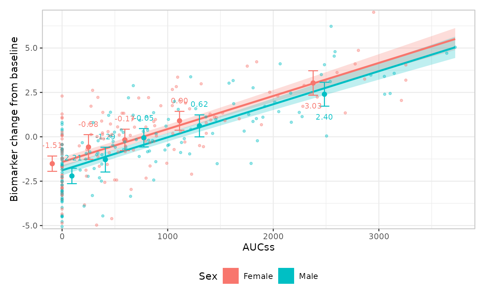
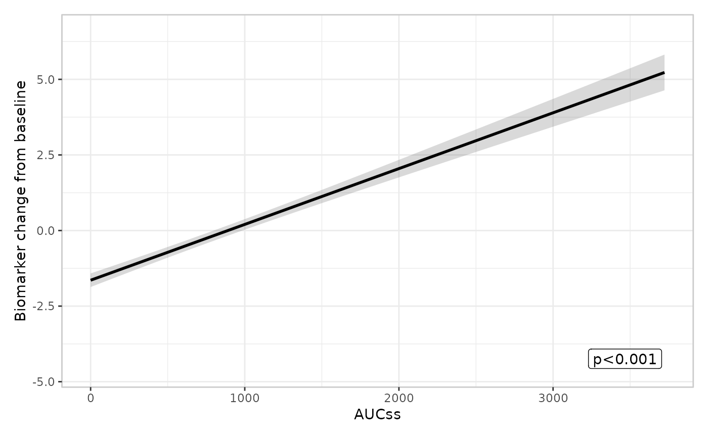
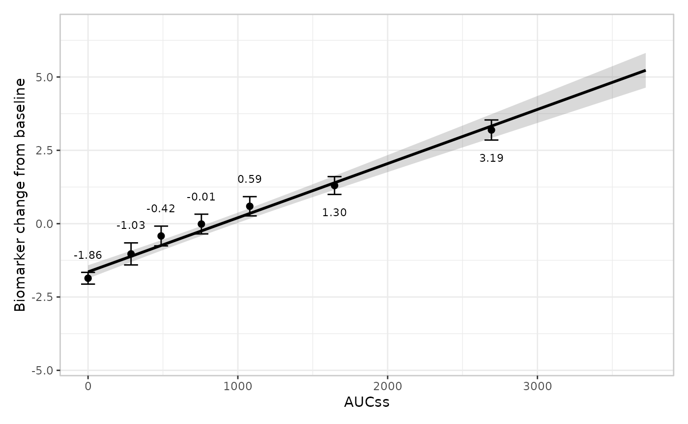
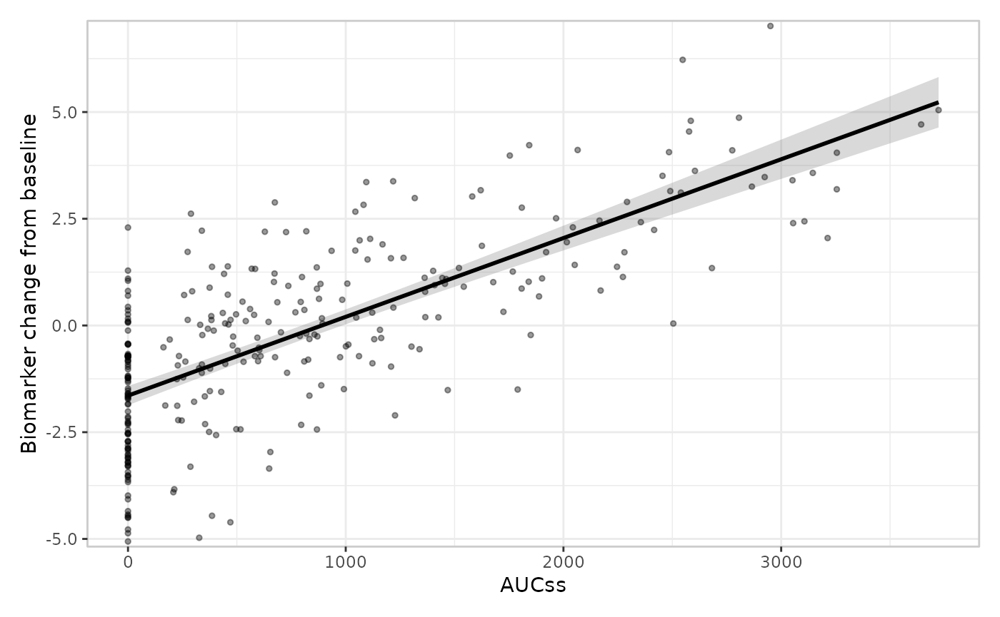
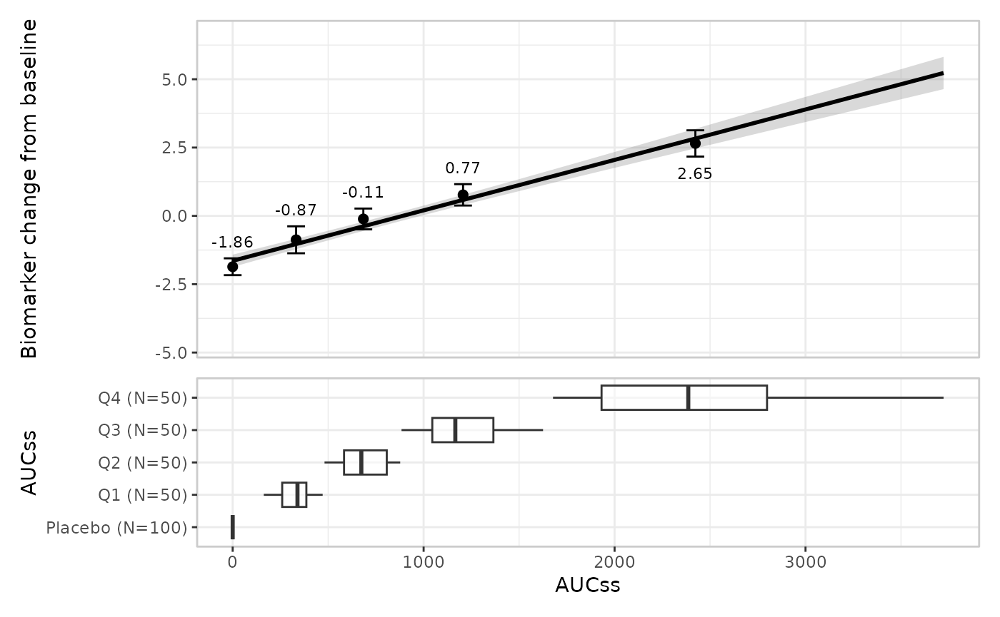
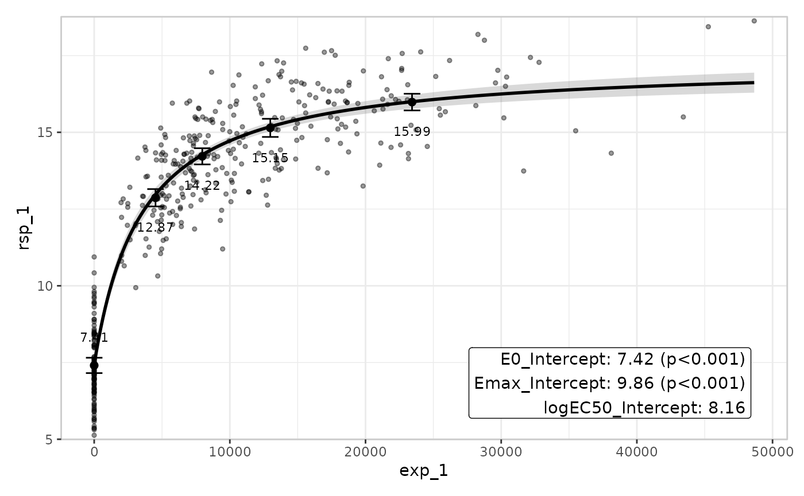

erplots draws exposure-response plots from any model that implements [er_model_interface]. This article uses a gaussian model fitted with erglm to cover continuous-response specifics; the model and group layers work identically for every response type, so this article only shows their default usage and links to the binary responses article for the builder-swapping detail (spaghetti plots, violin plots).
Fit the model first
mod_gaussian <- erglm_model(biomarker_change ~ aucss, erglm_data, family = gaussian())er_plot() auto-detects whether a response is binary
(logical, or values entirely in {0, 1}) or continuous, and
you can override the detection with response_type.
biomarker_change auto-detects as
"continuous".
Defining plots
erglm_data |>
er_plot(aucss, biomarker_change) |>
er_plot_add_model(mod_gaussian) |>
er_plot_add_quantiles() |>
plot()
Stratification
Stratification adds colour across all layers, and requires a model
that includes the stratification variable as a term. See the binary responses article for
a fuller worked example, including how to suppress stratification for
specific layers with keep_strata = FALSE.
mod_gaussian_sex <- erglm_model(
biomarker_change ~ aucss + sex, erglm_data, family = gaussian()
)
erglm_data |>
er_plot(aucss, biomarker_change, stratify_by = sex) |>
er_plot_add_model(mod_gaussian_sex) |>
er_plot_add_quantiles() |>
er_plot_add_data() |>
plot()
Model layer
The model layer doesn’t look at response_type at all –
it only consumes [er_predict()]/[er_simulate()] output – so it works
exactly the same way as for a binary response. See the binary responses article for
er_style_model_spaghetti() and the parameter-uncertainty
rationale behind it; the default builder is used here:
erglm_data |>
er_plot(aucss, biomarker_change) |>
er_plot_add_model(mod_gaussian) |>
er_plot_add_quantiles() |>
plot()
Summary layer
The summary layer doesn’t look at response_type at all
either – it only consumes whatever the model’s own [er_summary()] method
returns – so it works exactly the same way as for a binary response. See
the binary responses
article for er_style_summary_gof() and the full
four-builder set; the default builder is used here:
erglm_data |>
er_plot(aucss, biomarker_change) |>
er_plot_add_model(mod_gaussian) |>
er_plot_add_summary(model = mod_gaussian) |>
plot()
Quantile layer
For a continuous response, each exposure-quantile bin is summarised by its mean with a t-interval, rather than a rate with a Clopper-Pearson interval:
erglm_data |>
er_plot(aucss, biomarker_change) |>
er_plot_add_model(mod_gaussian) |>
er_plot_add_quantiles(bins = 6, conf_level = .8) |>
plot()
The t-interval is a reasonable default for a genuinely continuous
response like this one. See the count
responses article for a case – low-count Poisson data – where the
t-interval approximation can misbehave (a negative lower bound), and the
response_type = "count" declaration that fixes it.
Data layer
er_plot_add_data() adds the raw observations at their
true (exposure, response) coordinates via
er_style_data_overlay(), the default and only built-in
builder for a continuous response – no jitter is needed, since the
response isn’t confined to 0/1:
erglm_data |>
er_plot(aucss, biomarker_change) |>
er_plot_add_model(mod_gaussian) |>
er_plot_add_data() |>
plot()
There’s no built-in panel-based alternative for a continuous response
– er_style_data_boxjitter() (the older, panel-based
responders/non-responders design covered in the binary
responses article) is binary-only. If you need a panel-based builder
here (e.g. a single color-encoded panel), you can write a custom one and
tag it with er_style_tag(fn, layout = "panel") – see
design.Rmd’s “Extending erplots” section.
Group layer
The group layer doesn’t look at response_type at all –
it only consumes the exposure variable – so it works exactly the same
way as for a binary response. See the binary responses article for
multiple grouping variables and er_style_group_violin();
the default builder and a single grouping variable are shown here:
erglm_data |>
er_plot(aucss, biomarker_change) |>
er_plot_add_model(mod_gaussian) |>
er_plot_add_quantiles() |>
er_plot_add_groups(group_by = aucss) |>
plot()
VPC plot
er_vpc_plot() generalises the same way as the quantile
layer, comparing observed vs. simulated means rather
than rates:
sim_gaussian <- erglm_vpc_sim(mod_gaussian, seed = 3947)
er_vpc_plot(erglm_data, sim_gaussian, aucss, biomarker_change, group_by = aucss)
A second model package: emaxnls
Everything above uses erglm’s GLM-based models. To underline that
erplots genuinely doesn’t know or care which package fitted the model,
here’s the same pipeline driven by an Emax (sigmoidal dose-response)
model fitted with emaxnls,
which registers its own
er_predict()/er_simulate()/er_summary()
methods:
mod_emax <- emax_nls(
structural_model = rsp_1 ~ exp_1,
covariate_model = list(E0 ~ 1, Emax ~ 1, logEC50 ~ 1),
data = emax_df
)
emax_df |>
er_plot(exp_1, rsp_1) |>
er_plot_add_model(mod_emax) |>
er_plot_add_summary(model = mod_emax, style = er_style_summary_coefficients) |>
er_plot_add_quantiles() |>
er_plot_add_data() |>
plot()
er_style_summary_coefficients() is used here instead of
the default er_style_summary_pvalue() because an Emax model
has no single privileged coefficient to headline –
er_summary.emaxnls() reports p_value = NULL
and returns one row per parameter (E0, Emax,
logEC50) in coefficients instead.
emaxnls also implements the interface for
emax_logistic() models (binary responses): an
emaxlogistic object carries class
c("emaxlogistic", "emaxnls"), so it dispatches to the same
er_predict.emaxnls()/er_simulate.emaxnls()/er_summary.emaxnls()
methods via S3 inheritance, which branch internally to keep predictions
in [0, 1] and report r_squared = NA (rather
than a meaningless value) in er_summary()’s
glance. See the binary
responses article for that response type in general.